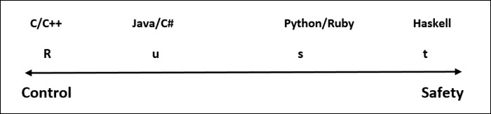

Rust
Rust is a multi-paradigm programming language focused on performance and safety, especially safe concurrency. Rust is intended to be a language for highly concurrent and highly safe systems, and programming in the large, that is, creating and maintaining boundaries that preserve large-system integrity. This has led to a feature set with an emphasis on safety, control of memory layout, and concurrency.
History
- The Rust originated from the personal project begun in 2006 by Graydon Hoare.
- In year 2009, the Mozilla start sponsoring it and announced it in 2010.
- The Intension of developing this language was of improving the way things are done, not to completely change that way.
- The 1.0 version of Rust was released on 15th may 2015 and it was the first stable version of Rust.
- Classes were introduced in the version 0.2 for the first time.
- Destructors and Polymorphism were added in the 0.3 version.
- Rust had two built-in pointers: ’~’ and ‘@’.
- The Hoare avoided the new syntaxes at the time of development to make it easier.
Overview & features
- It was developed by Graydon Hoare at mozilla research.
- It is a multi-paradigm programming language.
C++ and Rust are similar, but Rust provides memory safety without using garbage collection.
- Rust is mainly focused on performance and safety.
- It helps us in writing faster and more reliable software.
- Rust guarantee memory-safety and thread-safety.
- Rust is a statically and strongly typed systems programming language.
- Rust has been most loved language on Stack Overflow for four consecutive years.
- It has significant documentation and Powerful compiler with useful error messages.
Printing text & data in Rust
- In Rust printing is handled by series of macros.
- The format!() is used to print string in specific format.
- To print text in simple form print!() and print!() are used.
- Example:- print!(“ Hello, How are you? ”);
Taking input in Rust
- The std::io is the library which will perform the standard input of user.
- To get input from user first we have to create mutable string variable.
- After that by using io::stdin we can take the input from user.
- Example:- let mut str=String::new();
- io::stdin().read_line(&str);
Comments
- As other languages ‘//’ are used in Rust for single line comment.
- And ‘/*’ & ‘*/’ are used to give multiline comments.
- Example:
- # Hello - This is single line comment.
- /* Red
Green
Blue */
Variable Declaration and Scopes
- In Rust, datatype is optional. We can declare variable without specifying datatype.
- We can declare variable by using ‘let’ keyword.
- Example:- let fees=14000;
- To make value of variable mutable, we have to use ‘mut’ keyword at the time of variable declaration.
- Example:- let mut str = “quick brown fox jumps over the lazy dog”.
- ‘const’ keyword is used to declare variable as a constant.
Benefits of Rust
- Rust gives us option to store data on stack or on heap.
- At the time of compilation, it automatically determines that the memory is needed or not, and if not then it clears memory.
- Memory optimization is excellent in the Rust.
- The main advantage of the Rust is Speed.
- In Rust, every value is assigned an owner, as owner goes out of the scope it automatically drops the value of the owner.
- Rust perform memory allocation and tracking by itself.
- Rust provides cross-platform capabilities across Linux, macOS, Windows and other supported platforms.
- Rust standard library provides popular data structures
- It has very strong community support.
- By using Rust, we can predict the runtime behavior of the application and by this we need not have to waste time in debugging and testing.

Drawbacks of Rust
- It is one of the complex programming language.
- We cannot develop code as fast as the scripting language.
- The compilation time of Rust code is higher than some other languages.
- It is not cup of tea for all person to learn this language, it is hard to learn.
- There aren't many developers that know it comparing to other popular languages, which also means less blogs, examples, tutorials etc.
- Unlike many other languages, rust doesn’t have standard way of accessing databases.
- Rust is suffering from a lack of optional/labeled argument.
- It is strict language.
- The libraries in Rust are not sleek as they are in other languages.
- Because it is a new language, people still complain about syntax.
- Compare to C++ and especially C, Rust often produces larger binaries and less efficient code.
- Rust is not rely on garbage collection, so it is considered as the writing code in Rust is not easy.
Differences


Book of Rust Programming Language
Courses of Rust
Required tools to use Rust
- First we have to install rustup in our pc. ‘rustup’ is a command line for managing Rust.
- After that, C++ built-tools for visual studio are need to install.